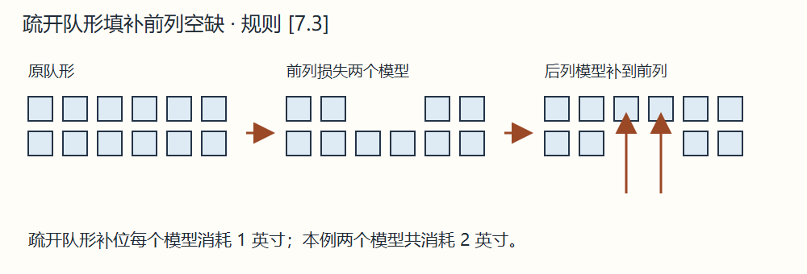
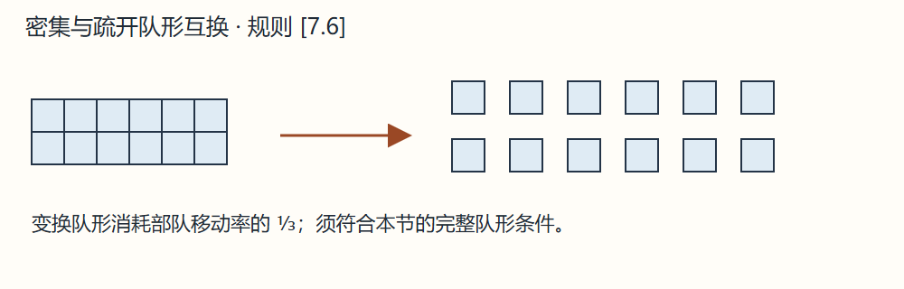
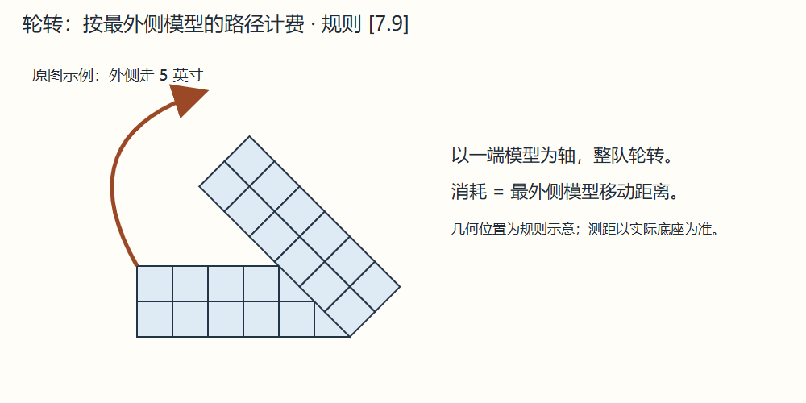
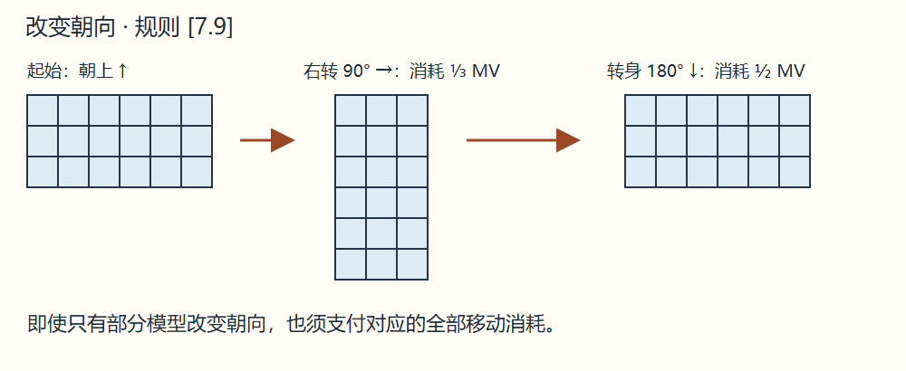
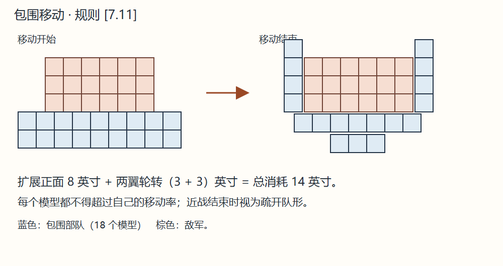

7.0 移动阶段 Movement Phase
本阶段部队可移动、变换队形、调整正面、转向或作特殊移动。
AD&D 使用对应生物的英寸移动率；D&D 按 [3.1] 换算。部分地形只在中级游戏收取移动消耗，变换队形与方向也消耗移动。在移动阶段开始时与敌底座相接，会限制可选行动。


A. 队形 Formations
[7.1] 队形的定义 Definition of Formation
队形即部队的部署方式，有密集、疏开、散兵和乌合四种。正规部队只用密集或疏开；散兵只用散兵；乌合之众只用乌合。PC／NPC 个体可加入部队，也可独立，不须始终属于某种队形，见 [9.0]。
[7.2] 密集队形 Closed Formation
模型底座彼此相接。伤亡一律从后排移除，不论实际攻击位置，因为默认前排缺口自动由后排填补。只有受指挥部队能进入密集队形。
[7.3] 疏开队形 Open Formation
模型底座间隔约 ½ 英寸。若使用组合模型架，可选把模型架间隔 1 英寸。
伤亡造成前排缺口时必须补位，每移动一个模型补位消耗 1 英寸，即使正与敌军底座相接也必须支付。若总消耗超过移动率，仍填满缺口，但本轮剩余时间不能再移动，溃逃除外。


[7.4] 散兵队形 Skirmish Formation
底座至少相隔 1 英寸，可任意分散得更远。可穿过另一支同为散兵队形的友军，其他队形不能这样穿越。遭损失不自动补位；若想补位，逐个模型按正常移动率移动。不能主动移动至与敌部队底座相接。
[7.5] 乌合队形 Mob Formation
不规则排列，整体近似方形，底座始终相接。伤亡从后方移除，前方缺口自动填补。
[7.6] 变换队形 Changing Formation
自己移动阶段任何时候均可变换。须所有模型受指挥；失控或溃逃是例外，此时若尚非疏开队形，自动变为疏开。
主动变换消耗移动率的 ⅓。失控、溃逃等被动变化不消耗移动。


B. 移动 Movement
[7.7] 如何移动 How to Move
用直尺或卷尺测量；各玩家自备量具有助加快游戏。模型从底座前缘量起。整部队移动，通常量前排一两个模型即可，其余模型移动后维持相对位置。乌合之众始终由预先指定的模型量起。
未宣布行动，严禁预量移动、射程、影响范围或任何距离。宣布后，相关部队必须执行该行动，或者整个阶段不行动。
[7.8] 移动与敌军 Movement and Enemy Units
模型一接触敌底座便立即停止。同部队尚未接触的模型可继续移动，但一旦任何成员接触敌军，整个部队不能再改变方向。
移动阶段开始便接触敌军的模型，只能进行包抄移动 [7.11]、且战且退 [7.12] 或逃离 [8.8]；即使敌军本轮才移来接触，也适用。
先攻落败、轮到自己时已被敌军贴住的部队，本移动阶段不能改变队形、朝向或正面。以后移动阶段也只可包抄、且战且退或逃离。
[7.9] 改变方向 Changing Direction
散兵可在自己移动阶段任意转向，不受移动处罚。密集或疏开部队可直行，或自由向左右偏转不超过 45°，不受移动处罚；用量角器或角度模板测量。
密集、疏开或乌合队形可作轮转 Wheeling：以一个模型为轴转动，消耗等于最外侧模型走过的距离。
密集或疏开队形还可原地改变朝向。全体或部分模型向左／右转 90°，消耗整部队移动率的 ⅓；向后转 180°，消耗 ½。即使只转部分模型，也支付全额。




[7.10] 调整正面 Changing Frontage
密集、疏开和乌合队形有正面宽度，即最前排模型数；散兵没有正面宽度。
可把后排模型调到前排，或把前排调回后排；每增减一个正面模型消耗 1 英寸。乌合之众只能在损失后补位，不能主动扩张或收缩正面。同一移动阶段不能既扩张又收缩，也不能借调整正面与敌部队接触。


[7.11] 包抄移动 Wrap-Around Movement
移动阶段开始与敌军底座相接的部队，可扩展正面，再把战线两端向内轮转以包围敌人；左右翼都可转。
总消耗为扩张正面与两翼轮转消耗之和；任一模型实际移动不能超过自身完整移动率。近战结束后，进行过包抄的部队自动视为疏开队形，即使底座间距未达到通常的 ½ 英寸，也是例外。


[7.12] 且战且退 Fighting Withdrawal
移动阶段开始与敌军接触、且当前移动率至少为 3 英寸的受指挥部队，可以向后退 3 英寸，不能因此接触另一支敌军。
敌方立即选择留在原地，或向前 3 英寸继续接触，即使本轮已经耗尽移动率也可跟进。若敌军为低智力或混乱阵营，须作纪律检定；成功才能选择留下，失败自动跟进。
选择留在原地的敌军，本轮剩余时间不能向该撤退部队冲锋。
[7.13] 强行军 Forced March
受指挥部队或 PC／NPC 个体可按正常完整移动率的 1½ 倍移动。该移动阶段的任何时候，部队都不能与敌模型底座相接。
部队移动结束作士气检定，失败令 AR 恶化 1，例如 19 变 20。处罚可累积，“从不作士气检定”的部队也受此规则影响。
例。AR 15 的部队连续强行军三轮，前两轮失败，AR 依次变 16、17；第三轮成功，保持 17。
此处罚持续存在。每整轮完全不行动、也未遭攻击，AR 恢复 1，至原值为止。
[7.14] 冲锋 Charge
正规部队或乌合之众若能在移动结束时接触敌军并近战，可按移动率的 1½ 倍冲锋，该距离称冲锋范围。结束必须与敌模型底座相接，并在近战阶段攻击它。
散兵与个体不能冲锋；纪律检定所用“冲锋范围”等于正常移动率。
接触目标前，必须能至少移动正常移动率的 ⅔；冲锋距离最后的 ⅓ 必须直行。可用疏开、密集或乌合队形冲锋。正规部队以密集队形冲锋，本轮近战阶段 AR −1，负数对攻击方有利。
密集冲锋的混乱阵营或低智力部队须作纪律检定；失败时冲锋途中失控并散为疏开队形。除此例外，失去指挥的正规部队不能冲锋。
若冲锋者即使只造成最低可能伤害，也足以杀死路径上的敌模型，就形成突破 Break Through：立即移除这些敌人，继续冲锋，无须消灭敌方整支部队。但近战阶段结束仍须与其他敌模型接触，否则受下述处罚。
密集部队若冲锋结束未接触敌模型，散为疏开，但仍受指挥。疏开或乌合部队若未接触，本轮剩余时间当前士气 −3。
[7.15] 溃逃 Routing
疏开或散兵部队士气失败会溃逃；乌合之众同样按 [4.5] 溃逃。放置溃逃标记，立即背离检定诱因，移动完整移动率再加 ⅓，结束背朝敌军；可能时朝己方阵线撤退。
撞上未溃逃友军，该友军立即作士气检定；若也溃逃，移至引发检定的友军前面。若没有溃逃，原溃军从其两侧绕过，在另一侧重组，继续移动。溃军可穿过散兵，但散兵仍须检定。
重整阶段可尝试重整；未尝试或失败，随后移动阶段沿原方向移动完整移动率。移出战场便退出战斗。
若四周所有可通行地形均被敌方密集或疏开部队封锁，且没有至少 1 英寸宽、可容一个模型逃走的通路，本应溃逃的部队自动全灭。有这样的缺口，则整部队都可经缺口逃出，但每个模型不能超过其溃逃移动率。
可选规则。战役战斗中，包围者可选择俘虏敌溃军。每四个被俘敌模型须指定一个己方模型看守，否则俘虏自动逃脱，按溃逃模型处理。俘虏结算双倍经验 [16.2]；战役允许时可索赎金，也可经双方同意交换俘虏。